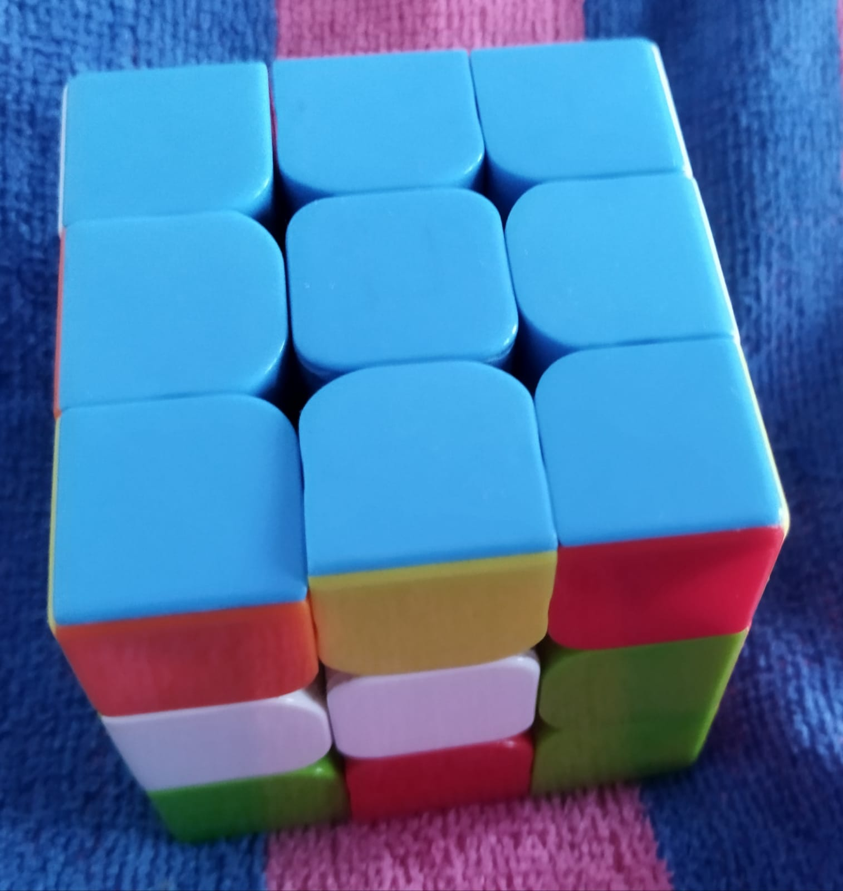
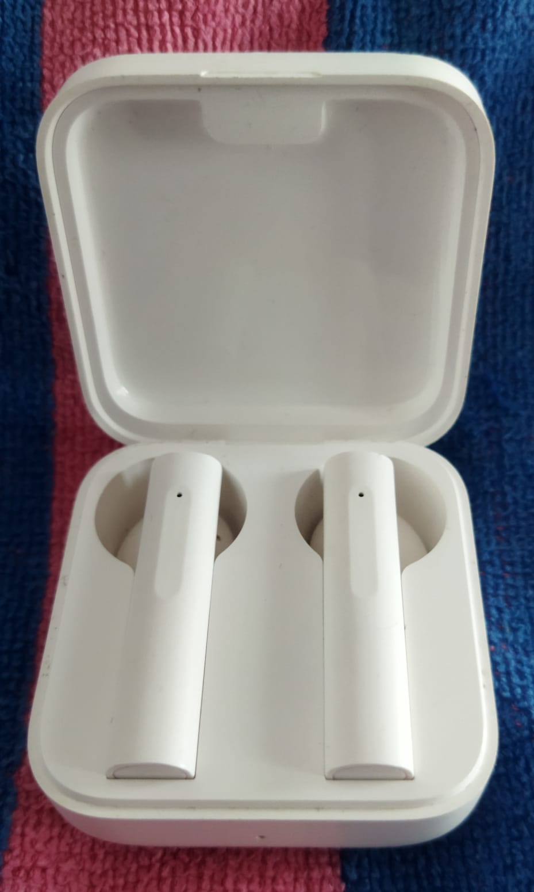
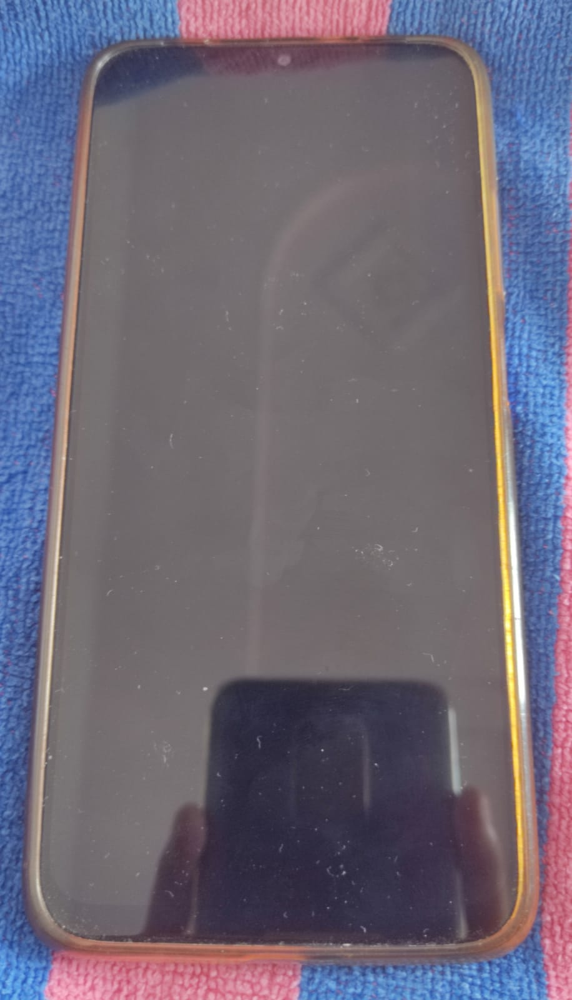
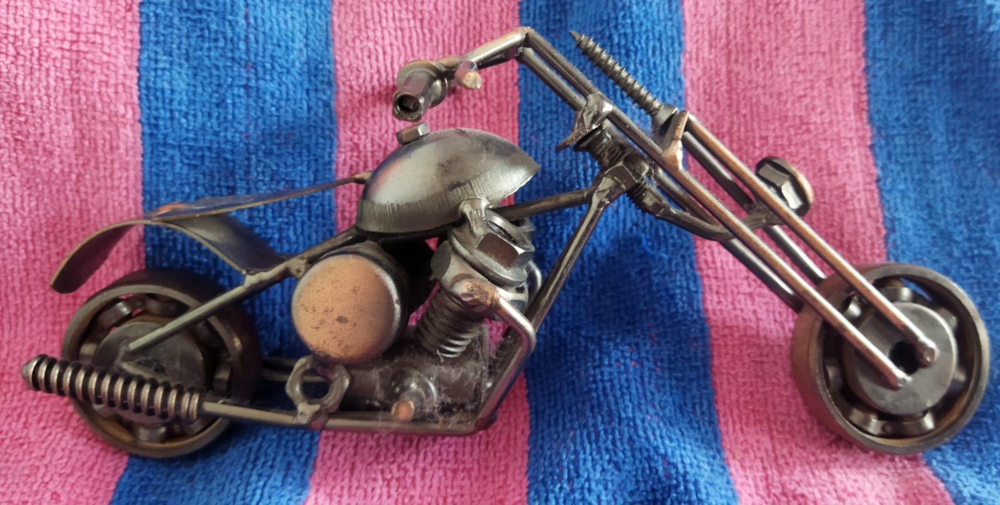

Case Study Between Google Lens And MobileNet
Google Lens

vs
- Test Image -
Output on GOOGLE Lens - Cup
Output on Mobilenet Models - Coffee mug
Result -
MobileNet is More Accurate
- Test Image - 
Output on GOOGLE Lens - rubik's cube
Output on Mobilenet Models - buckle
Result -
Google Lens is More Accurate
- Test Image - 
Output on GOOGLE Lens - mi true wirelesss earphones 2 basic white
Output on Mobilenet Models - ipod
Result -
Google Lens is More Accurate
- Test Image - 
Output on GOOGLE Lens - phone
Output on Mobilenet Models - microphone , mike
Result -
Google Lens is More Accurate
- Test Image - 